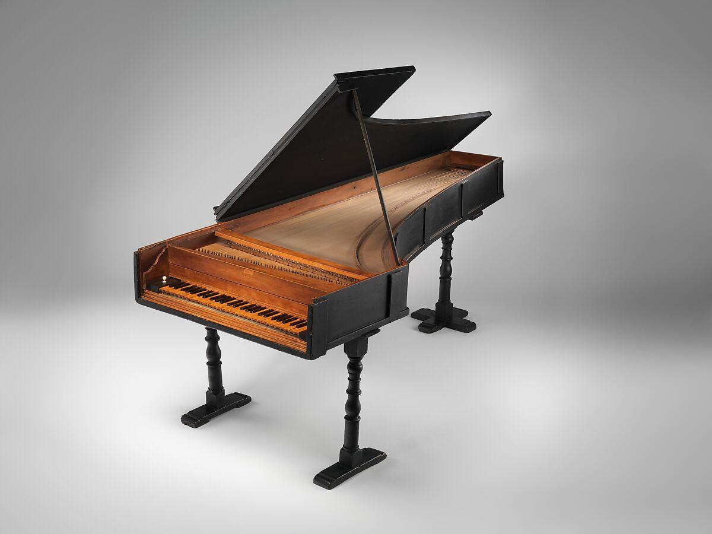

第1章｜ピアノは誰が発明したのか？
この章の目次
約1700年、イタリアで生まれた新しい楽器
クリストフォリが1720年に製作した、現存する世界最古のピアノ。メトロポリタン美術館所蔵。［所蔵品の画像は章末の資料からご覧いただけます。］

写真 The Metropolitan Museum of Art（Open Access・CC0）。 写真の出典
1-1. ピアノには、発明者がいる
ピアノの鍵盤を押すと、音が鳴る。
軽く押せば小さく、強く押せば大きく。今では当たり前のこの仕組みですが、かつて鍵盤楽器で音量を自由に変化させることは、簡単ではありませんでした。
この問題に挑んだ人物が、イタリアの楽器製作者、バルトロメオ・クリストフォリ（Bartolomeo Cristofori、1655〜1731）です。
クリストフォリは、イタリアのフィレンツェでメディチ家に仕え、楽器の製作や管理に携わっていました。
そして1700年頃、鍵盤の打ち方によって音の強弱を変えられる、実用的なハンマー式の鍵盤楽器を生み出しました。
これが、現在のピアノの原型です。1700年のメディチ家の楽器目録に記録があり、クリストフォリは一般にピアノの発明者とされています。
1-2. ピアノが生まれる前には何があった？
ピアノの誕生を理解するには、それ以前の鍵盤楽器を知る必要があります。
チェンバロ（ハープシコード）
鍵盤を押すと、小さな爪のような部品が弦をはじいて音を出します。華やかで輪郭のはっきりした音が特徴です。
ただし、鍵盤を押す速さによって、ピアノのように音量を連続的に変えることは困難です。
クラヴィコード
タンジェントという金属製の小さな部品が弦に触れて振動を起こします。
タッチによる強弱表現が可能でしたが、音量が小さく、大きな演奏会場には向きませんでした。
クリストフォリのピアノは、こうした鍵盤楽器の長所を生かしながら、別の方法で弦を鳴らすことに成功しました。
それが、ハンマーで弦を打つという仕組みです。
1-3. 最大の発明は、ハンマーが弦から離れること
単純にハンマーで弦をたたけばよい、というわけではありません。
ハンマーが弦に押しつけられたままでは、弦の振動を妨げてしまいます。
そこで重要になるのが、弦を打つ直前に、ハンマーを押し上げていた仕組みからハンマーを解放する「エスケープメント」です。ハンマーは勢いで弦を打ち、そのあと弦から離れます。
クリストフォリは、ハンマーの動きと弦の振動を両立させる、巧妙な機構を考案しました。
驚くべきことに、その基本的な発想は現在のピアノにも受け継がれています。
- 押し上げ鍵盤の動きがハンマーに伝わる。
- 解放弦に届く直前に駆動部から離れる。
- 打弦ハンマーが勢いで弦を打つ。
- 離脱ハンマーが戻り、弦は振動を続ける。
図版 Kussoon制作。 図解の参考資料
1-4. 「ピアノ」という名前の意味
1700年の楽器目録には、弱い音と強い音を出す新しいチェンバロのような楽器として記録されています。
その特徴を表す piano e forte から「ピアノフォルテ」という呼び名が生まれ、短く「ピアノ」とも呼ばれるようになりました。18世紀から19世紀初頭ごろの歴史的なピアノを現代のものと区別するときには、「フォルテピアノ」という名も使われます。
ちなみに、音楽用語の piano は「弱く」、forte は「強く」という意味です。
つまり「ピアノ」という名前そのものが、この楽器の画期的な特徴を物語っているのです。
1-5. 現存する最古のピアノはどこに？
クリストフォリが製作したピアノは、現在3台が残っています。
- 1720年製：アメリカ・ニューヨーク、メトロポリタン美術館
- 1722年製：イタリア・ローマの楽器博物館
- 1726年製：ドイツ・ライプツィヒの楽器博物館
最も古い1720年製の楽器には、鍵盤が54個しかありません。
現在の標準的なピアノは88鍵ですから、34鍵も少ないことになります。
形も音色も現代のグランドピアノとは異なりますが、そこには300年以上続くピアノの歴史の出発点が残っています。
第1章のまとめ
ピアノの画期的な点は、鍵盤の打ち方によって音の強弱を変えられるハンマー式の機構でした。
そして、この発明は完成形ではなく、その後の職人たちによる改良を経て、現代のピアノへと成長していくことになります。